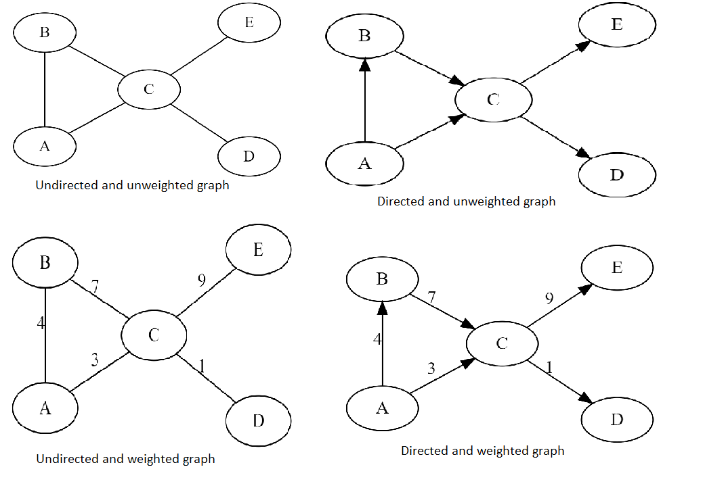
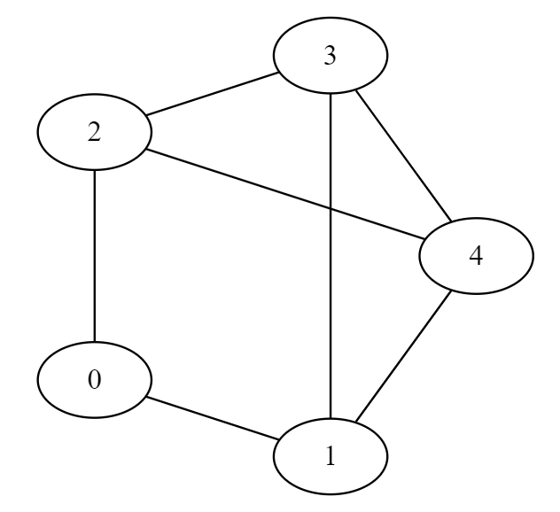
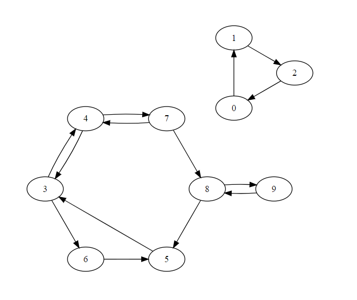
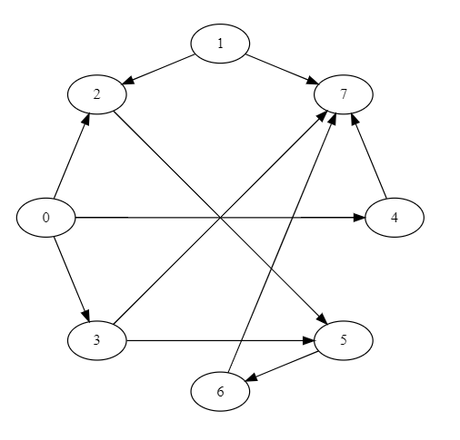

Week 4 - Graph Summary
Week 4 - Graph SummaryIntroduction of GraphTypes of graphGraph Representation(Unweighted)For directed graphFor undirected graphGraph Traversing AlgorithmBreadth First Search(BFS) BFS for adjacency list of graphBFS for adjacency matrix of graphDepth First Search(DFS)DFS for adjacency list of graphDFS for adjacency matrix of graphApplication of BFS and DFSDirected Acyclic Graph(DAG)Topological SortLongest Path in DAG
Introduction of Graph
Graph:- It is a non-linear data structure. A graph G consist of a non empty set V where members are called the vertices of graph and the set E where member are called the edges.
G = (V, E)
V = set of vertices
E = set of edges
Example:-

G = (V, E)
V = {A,B,C,D,E}
E = {e1,e2,e3,e4,e5} or {(A,B), (A,C), (B,C), (C,D), (C,E)}
Types of graph

Graph Representation(Unweighted)
For directed graph

G = (V, E)
V = [0,1,2,3,4]
E = [(0, 1), (0, 2), (1, 3), (1, 4), (2, 4), (2, 3), (3, 4)]
Adjacency matrix creation(using numpy 2d array) for given directed graph in python
1V = [0,1,2,3,4]2E = [(0, 1), (0, 2), (1, 3), (1, 4), (2, 4), (2, 3), (3, 4)] # each tuple(u,v) represent edge from u to v3size = len(V)4import numpy as np5AMat = np.zeros(shape=(size,size))6for (i,j) in E:7 AMat[i,j] = 1 # mark 1 if edge present in graph from i to j , otherwise 08print(AMat)Output adjacency matrix (AMat)
xxxxxxxxxx61[[0. 1. 1. 0. 0.]2 [0. 0. 0. 1. 1.]3 [0. 0. 0. 1. 1.]4 [0. 0. 0. 0. 1.]5 [0. 0. 0. 0. 0.]]6# AMat[i,j] == 1 represent edge from i to j Adjacency matrix creation(using nested list) for given directed graph in python
xxxxxxxxxx121V = [0,1,2,3,4]2E = [(0, 1), (0, 2), (1, 3), (1, 4), (2, 4), (2, 3), (3, 4)]3size = len(V)4AMat = []5for i in range(size):6 row = []7 for j in range(size):8 row.append(0)9 AMat.append(row.copy()) 10for (i,j) in E:11 AMat[i][j] = 1 # mark 1 if edge present in graph from i to j , otherwise 012print(AMat)Output adjacency matrix (AMat)
xxxxxxxxxx61[[0, 1, 1, 0, 0],2[0, 0, 0, 1, 1],3[0, 0, 0, 1, 1],4[0, 0, 0, 0, 1],5[0, 0, 0, 0, 0]]6# AMat[i][j] == 1 represent edge from i to jAdjacency list creation(using dictionary) for given directed graph in python
xxxxxxxxxx101V = [0,1,2,3,4]2E = [(0, 1), (0, 2), (1, 3), (1, 4), (2, 4), (2, 3), (3, 4)]3size = len(V)4AList = {}5# In dictionay AList, for example, AList[i] = [j,k] represent two edge from i to j and i to k6for i in range(size):7 AList[i] = []8for (i,j) in E:9 AList[i].append(j)10print(AList)Output adjacency list (AList)
xxxxxxxxxx21{0: [1, 2], 1: [3, 4], 2: [4, 3], 3: [4], 4: []}2# for example, AList[i] = [j,k] represent two edge from i to j and i to k
For undirected graph

G = (V, E)
V = [0,1,2,3,4]
E = [(0, 1), (0, 2), (1, 3), (1, 4), (2, 4), (2, 3), (3, 4)]
Adjacency matrix creation(using numpy 2d array) for given undirected graph in python
xxxxxxxxxx91V = [0,1,2,3,4]2E = [(0, 1), (0, 2), (1, 3), (1, 4), (2, 4), (2, 3), (3, 4)]3UE = E + [ (j,i) for (i,j) in E] # each edge represented by two tuple (u,v) and (v,u)4size = len(V)5import numpy as np6AMat = np.zeros(shape=(size,size))7for (i,j) in UE:8 AMat[i,j] = 1 # mark 1 if edge present in graph from i to j , otherwise 09print(AMat)Output adjacency matrix (AMat)
xxxxxxxxxx61[[0. 1. 1. 0. 0.]2 [1. 0. 0. 1. 1.]3 [1. 0. 0. 1. 1.]4 [0. 1. 1. 0. 1.]5 [0. 1. 1. 1. 0.]]6 # AMat[i,j] == 1 represent edge from i to jAdjacency matrix creation(using nested list) for given undirected graph in python
xxxxxxxxxx131V = [0,1,2,3,4]2E = [(0, 1), (0, 2), (1, 3), (1, 4), (2, 4), (2, 3), (3, 4)]3UE = E + [ (j,i) for (i,j) in E] # each edge represented by two tuple (u,v) and (v,u)4size = len(V)5AMat = []6for i in range(size):7 row = []8 for j in range(size):9 row.append(0)10 AMat.append(row.copy()) 11for (i,j) in UE:12 AMat[i][j] = 1 # mark 1 if edge present in graph from i to j , otherwise 013print(AMat)Output adjacency matrix (AMat)
xxxxxxxxxx61[[0, 1, 1, 0, 0], 2[1, 0, 0, 1, 1], 3[1, 0, 0, 1, 1], 4[0, 1, 1, 0, 1], 5[0, 1, 1, 1, 0]]6# AMat[i][j] == 1 represent edge from i to jAdjacency list creation(using dictionary) for given undirected graph in python
xxxxxxxxxx111V = [0,1,2,3,4]2E = [(0, 1), (0, 2), (1, 3), (1, 4), (2, 4), (2, 3), (3, 4)]3UE = E + [ (j,i) for (i,j) in E] # each edge represented by two tuple (u,v) and (v,u)4size = len(V)5AList = {}6# In dictionay AList, for example, AList[i] = [j,k] represent two edge from i to j and i to k7for i in range(size):8 AList[i] = []9for (i,j) in UE:10 AList[i].append(j)11print(AList)Output adjacency list (AList)
xxxxxxxxxx21{0: [1, 2], 1: [3, 4, 0], 2: [4, 3, 0], 3: [4, 1, 2], 4: [1, 2, 3]}2# for example, AList[i] = [j,k] represent two edge from i to j and i to k
Graph Traversing Algorithm
Breadth First Search(BFS)
BFS for adjacency list of graph
x1class Queue:2 def __init__(self):3 self.queue = []4 def addq(self,v):5 self.queue.append(v)6 def delq(self):7 v = None8 if not self.isempty():9 v = self.queue[0]10 self.queue = self.queue[1:]11 return(v) 12 def isempty(self):13 return(self.queue == [])14 def __str__(self):15 return(str(self.queue))16
17def BFSList(AList,v):18 visited = {}19 for i in AList.keys():20 visited[i] = False21 q = Queue()22 23 visited[v] = True24 q.addq(v)25 26 while(not q.isempty()):27 j = q.delq()28 for k in AList[j]:29 if (not visited[k]):30 visited[k] = True31 q.addq(k) 32 return(visited)33AList ={0: [1, 2], 1: [3, 4], 2: [4, 3], 3: [4], 4: []}34print(BFSList(AList,0))Output
xxxxxxxxxx11{0: True, 1: True, 2: True, 3: True, 4: True}
BFS for adjacency matrix of graph
xxxxxxxxxx501class Queue:2 def __init__(self):3 self.queue = []4 def addq(self,v):5 self.queue.append(v)6 def delq(self):7 v = None8 if not self.isempty():9 v = self.queue[0]10 self.queue = self.queue[1:]11 return(v) 12 def isempty(self):13 return(self.queue == [])14 def __str__(self):15 return(str(self.queue))16
17def neighbours(AMat,i):18 nbrs = []19 (rows,cols) = AMat.shape20 for j in range(cols):21 if AMat[i,j] == 1:22 nbrs.append(j)23 return(nbrs)24def BFS(AMat,v):25 (rows,cols) = AMat.shape26 visited = {}27 for i in range(rows):28 visited[i] = False29 q = Queue()30 31 visited[v] = True32 q.addq(v)33 34 while(not q.isempty()):35 j = q.delq()36 for k in neighbours(AMat,j):37 if (not visited[k]):38 visited[k] = True39 q.addq(k)40 41 return(visited)42
43V = [0,1,2,3,4]44E = [(0, 1), (0, 2), (1, 3), (1, 4), (2, 4), (2, 3), (3, 4)] 45size = len(V)46import numpy as np47AMat = np.zeros(shape=(size,size))48for (i,j) in E:49 AMat[i,j] = 150print(BFS(AMat,0))Output
xxxxxxxxxx11{0: True, 1: True, 2: True, 3: True, 4: True}
List of path from vertex V using BFS
xxxxxxxxxx371class Queue:2 def __init__(self):3 self.queue = []4 def addq(self,v):5 self.queue.append(v)6 def delq(self):7 v = None8 if not self.isempty():9 v = self.queue[0]10 self.queue = self.queue[1:]11 return(v) 12 def isempty(self):13 return(self.queue == [])14 def __str__(self):15 return(str(self.queue))16
17def BFSListPath(AList,v):18 (visited,parent) = ({},{})19 for i in AList.keys():20 visited[i] = False21 parent[i] = -122 q = Queue()23 24 visited[v] = True25 q.addq(v)26 27 while(not q.isempty()):28 j = q.delq()29 for k in AList[j]:30 if (not visited[k]):31 visited[k] = True32 parent[k] = j33 q.addq(k)34 35 return(visited,parent)36AList ={0: [1, 2], 1: [3, 4], 2: [4, 3], 3: [4], 4: []}37print(BFSListPath(AList,0))Output
xxxxxxxxxx11({0: True, 1: True, 2: True, 3: True, 4: True}, {0: -1, 1: 0, 2: 0, 3: 1, 4: 1})
Find level of vertex V using BFS
xxxxxxxxxx371class Queue:2 def __init__(self):3 self.queue = []4 def addq(self,v):5 self.queue.append(v)6 def delq(self):7 v = None8 if not self.isempty():9 v = self.queue[0]10 self.queue = self.queue[1:]11 return(v) 12 def isempty(self):13 return(self.queue == [])14 def __str__(self):15 return(str(self.queue))16
17def BFSListPathLevel(AList,v):18 (level,parent) = ({},{})19 for i in AList.keys():20 level[i] = -121 parent[i] = -122 q = Queue()23 24 level[v] = 025 q.addq(v)26 27 while(not q.isempty()):28 j = q.delq()29 for k in AList[j]:30 if (level[k] == -1):31 level[k] = level[j]+132 parent[k] = j33 q.addq(k)34 35 return(level,parent)36AList ={0: [1, 2], 1: [3, 4], 2: [4, 3], 3: [4], 4: []}37print(BFSListPathLevel(AList,0))Output
xxxxxxxxxx11({0: 0, 1: 1, 2: 1, 3: 2, 4: 2}, {0: -1, 1: 0, 2: 0, 3: 1, 4: 1})
Depth First Search(DFS)
DFS for adjacency list of graph
DFS using Stack for adjacency list of graph
xxxxxxxxxx311class Stack:2 def __init__(self):3 self.stack = []4 def Push(self,v):5 self.stack.append(v)6 def Pop(self):7 v = None8 if not self.isempty():9 v = self.stack.pop()10 return(v) 11 def isempty(self):12 return(self.stack == [])13 def __str__(self):14 return(str(self.stack))15
16def DFSList(AList,v):17 visited = {}18 for i in AList.keys():19 visited[i] = False20 st = Stack() 21 st.Push(v) 22 while(not st.isempty()):23 j = st.Pop()24 if visited[j] == False:25 visited[j] = True26 for k in AList[j][::-1]:27 if(not visited[k]):28 st.Push(k) 29 return(visited)30AList ={0: [1, 2], 1: [3, 4], 2: [4, 3], 3: [4], 4: []}31print(DFSList(AList,0))Output
xxxxxxxxxx11{0: True, 1: True, 2: True, 3: True, 4: True}
DFS Recursive (without using external stack)
xxxxxxxxxx181def DFSInitList(AList):2 # Initialization3 (visited,parent) = ({},{})4 for i in AList.keys():5 visited[i] = False6 parent[i] = -17 return(visited,parent)8
9def DFSList(AList,visited,parent,v):10 visited[v] = True11 for k in AList[v]:12 if (not visited[k]):13 parent[k] = v14 (visited,parent) = DFSList(AList,visited,parent,k) 15 return(visited,parent)16AList ={0: [1, 2], 1: [3, 4], 2: [4, 3], 3: [4], 4: []}17v,p = DFSInitList(AList)18print(DFSList(AList,v,p,0))Output
xxxxxxxxxx11({0: True, 1: True, 2: True, 3: True, 4: True}, {0: -1, 1: 0, 2: 0, 3: 1, 4: 3})
DFS global for adjacency list of graph
xxxxxxxxxx211(visited,parent) = ({},{})2
3def DFSInitListGlobal(AList):4 # Initialization 5 for i in AList.keys():6 visited[i] = False7 parent[i] = -18 return9
10def DFSListGlobal(AList,v):11 visited[v] = True12
13 for k in AList[v]:14 if (not visited[k]):15 parent[k] = v16 DFSListGlobal(AList,k) 17 return18AList ={0: [1, 2], 1: [3, 4], 2: [4, 3], 3: [4], 4: []}19DFSInitListGlobal(AList)20DFSListGlobal(AList,0)21print(visited,parent)Output
xxxxxxxxxx11{0: True, 1: True, 2: True, 3: True, 4: True} {0: -1, 1: 0, 2: 0, 3: 1, 4: 3}
DFS for adjacency matrix of graph
xxxxxxxxxx341def neighbours(AMat,i):2 nbrs = []3 (rows,cols) = AMat.shape4 for j in range(cols):5 if AMat[i,j] == 1:6 nbrs.append(j)7 return(nbrs)8def DFSInit(AMat):9 # Initialization10 (rows,cols) = AMat.shape11 (visited,parent) = ({},{})12 for i in range(rows):13 visited[i] = False14 parent[i] = -115 return(visited,parent)16
17def DFS(AMat,visited,parent,v):18 visited[v] = True19
20 for k in neighbours(AMat,v):21 if (not visited[k]):22 parent[k] = v23 (visited,parent) = DFS(AMat,visited,parent,k)24 25 return(visited,parent)26V = [0,1,2,3,4]27E = [(0, 1), (0, 2), (1, 3), (1, 4), (2, 4), (2, 3), (3, 4)] 28size = len(V)29import numpy as np30AMat = np.zeros(shape=(size,size))31for (i,j) in E:32 AMat[i,j] = 133v,p=DFSInit(AMat)34print(DFS(AMat,v,p,0))Output
xxxxxxxxxx11({0: True, 1: True, 2: True, 3: True, 4: True}, {0: -1, 1: 0, 2: 0, 3: 1, 4: 3})
DFS global for adjacency matrix of graph
xxxxxxxxxx361(visited,parent) = ({},{})2def neighbours(AMat,i):3 nbrs = []4 (rows,cols) = AMat.shape5 for j in range(cols):6 if AMat[i,j] == 1:7 nbrs.append(j)8 return(nbrs)9
10def DFSInitGlobal(AMat):11 # Initialization12 (rows,cols) = AMat.shape 13 for i in range(rows):14 visited[i] = False15 parent[i] = -116 return17
18def DFSGlobal(AMat,v):19 visited[v] = True20
21 for k in neighbours(AMat,v):22 if (not visited[k]):23 parent[k] = v24 DFSGlobal(AMat,k)25 26 return27V = [0,1,2,3,4]28E = [(0, 1), (0, 2), (1, 3), (1, 4), (2, 4), (2, 3), (3, 4)] 29size = len(V)30import numpy as np31AMat = np.zeros(shape=(size,size))32for (i,j) in E:33 AMat[i,j] = 134DFSInitGlobal(AMat)35DFSGlobal(AMat,0)36print(visited,parent)Output
xxxxxxxxxx11{0: True, 1: True, 2: True, 3: True, 4: True} {0: -1, 1: 0, 2: 0, 3: 1, 4: 3}
Application of BFS and DFS
Find Components using BFS
For given graph

xxxxxxxxxx481class Queue:2 def __init__(self):3 self.queue = []4 def addq(self,v):5 self.queue.append(v)6 def delq(self):7 v = None8 if not self.isempty():9 v = self.queue[0]10 self.queue = self.queue[1:]11 return(v) 12 def isempty(self):13 return(self.queue == [])14 def __str__(self):15 return(str(self.queue))16
17def BFSList(AList,v):18 visited = {}19 for i in AList.keys():20 visited[i] = False21 q = Queue()22 23 visited[v] = True24 q.addq(v)25 26 while(not q.isempty()):27 j = q.delq()28 for k in AList[j]:29 if (not visited[k]):30 visited[k] = True31 q.addq(k) 32 return(visited)33def Components(AList):34 component = {}35 for i in AList.keys():36 component[i] = -1 37 (compid,seen) = (0,0) 38 while seen < max(AList.keys()):39 startv = min([i for i in AList.keys() if component[i] == -1])40 visited = BFSList(AList,startv)41 for i in visited.keys():42 if visited[i]:43 seen = seen + 144 component[i] = compid45 compid = compid + 1 46 return(component)47AList = {0: [1], 1: [2], 2: [0], 3: [4, 6], 4: [3, 7], 5: [3, 7], 6: [5], 7: [4, 8], 8: [5, 9], 9: [8]}48print(Components(AList))Output
xxxxxxxxxx11{0: 0, 1: 0, 2: 0, 3: 1, 4: 1, 5: 1, 6: 1, 7: 1, 8: 1, 9: 1}
Pre Post using DFS
For given graph

xxxxxxxxxx251(visited,pre,post) = ({},{},{})2
3def DFSInitPrePost(AList):4 # Initialization 5 for i in AList.keys():6 visited[i] = False7 (pre[i],post[i]) = (-1,-1)8 return9
10def DFSListPrePost(AList,v,count):11 visited[v] = True12 pre[v] = count13 count = count+1 14 for k in AList[v]:15 if (not visited[k]):16 count = DFSListPrePost(AList,k,count)17 post[v] = count18 count = count+1 19 return(count)20AList = {0: [1, 4],1: [0],2: [],3: [],4: [0, 8, 9],5: [],6: [],7: [],8: [4, 9],9: [8, 4]}21DFSInitPrePost(AList)22print(DFSListPrePost(AList,0,0))23print(visited)24print(pre)25print(post)Output
xxxxxxxxxx41102{0: True, 1: True, 2: False, 3: False, 4: True, 5: False, 6: False, 7: False, 8: True, 9: True}3{0: 0, 1: 1, 2: -1, 3: -1, 4: 3, 5: -1, 6: -1, 7: -1, 8: 4, 9: 5}4{0: 9, 1: 2, 2: -1, 3: -1, 4: 8, 5: -1, 6: -1, 7: -1, 8: 7, 9: 6}
Directed Acyclic Graph(DAG)
A Directed Acyclic Graph(DAG) is a directed graph with no directed cycles. That is, it consists of vertices and edges, with each edge directed from one vertex to another, such that following those directions will never form a closed loop.
Directed acyclic graphs are a natural way to represent dependencies
Arise in many contexts
- Pre-requisites between courses for completing a degree
- Recipe for cooking
- Construction project
Problems to be solved on DAGS
- Topological sorting
- Longest paths
Topological Sort
For given graph(DAG)

Topological sort for Adjacency matrix
xxxxxxxxxx261def toposort(AMat):2 (rows,cols) = AMat.shape3 indegree = {}4 toposortlist = []5 for c in range(cols):6 indegree[c] = 07 for r in range(rows):8 if AMat[r,c] == 1:9 indegree[c] = indegree[c] + 110 11 for i in range(rows):12 j = min([k for k in range(cols)13 if indegree[k] == 0])14 toposortlist.append(j)15 indegree[j] = indegree[j]-116 for k in range(cols):17 if AMat[j,k] == 1:18 indegree[k] = indegree[k] - 1 19 return(toposortlist)20edges=[(0,2),(0,3),(0,4),(1,2),(1,7),(2,5),(3,5),(3,7),(4,7),(5,6),(6,7)]21size = 822import numpy as np23AMat = np.zeros(shape=(size,size))24for (i,j) in edges:25 AMat[i,j] = 126print(toposort(AMat))Output
xxxxxxxxxx11[0, 1, 2, 3, 4, 5, 6, 7]
Topological sort for Adjacency list
xxxxxxxxxx411class Queue:2 def __init__(self):3 self.queue = []4 def addq(self,v):5 self.queue.append(v)6 def delq(self):7 v = None8 if not self.isempty():9 v = self.queue[0]10 self.queue = self.queue[1:]11 return(v) 12 def isempty(self):13 return(self.queue == [])14 def __str__(self):15 return(str(self.queue))16def toposortlist(AList):17 (indegree,toposortlist) = ({},[])18 zerodegreeq = Queue()19
20 for u in AList.keys():21 indegree[u] = 022 23 for u in AList.keys():24 for v in AList[u]:25 indegree[v] = indegree[v] + 126 27 for u in AList.keys():28 if indegree[u] == 0:29 zerodegreeq.addq(u)30 31 while (not zerodegreeq.isempty()):32 j = zerodegreeq.delq()33 toposortlist.append(j)34 indegree[j] = indegree[j]-135 for k in AList[j]:36 indegree[k] = indegree[k] - 137 if indegree[k] == 0:38 zerodegreeq.addq(k) 39 return(toposortlist)40AList={0: [2, 3, 4], 1: [2, 7], 2: [5], 3: [5, 7], 4: [7], 5: [6], 6: [7], 7: []}41print(toposortlist(AList))Output
xxxxxxxxxx11[0, 1, 3, 4, 2, 5, 6, 7]
Longest Path in DAG
For given graph(DAG)
xxxxxxxxxx421class Queue:2 def __init__(self):3 self.queue = []4 def addq(self,v):5 self.queue.append(v)6 def delq(self):7 v = None8 if not self.isempty():9 v = self.queue[0]10 self.queue = self.queue[1:]11 return(v) 12 def isempty(self):13 return(self.queue == [])14 def __str__(self):15 return(str(self.queue))16def longestpathlist(AList):17 (indegree,lpath) = ({},{})18 zerodegreeq = Queue()19
20 for u in AList.keys():21 (indegree[u],lpath[u]) = (0,0)22 23 for u in AList.keys():24 for v in AList[u]:25 indegree[v] = indegree[v] + 126 27 for u in AList.keys():28 if indegree[u] == 0:29 zerodegreeq.addq(u)30 31 while (not zerodegreeq.isempty()):32 j = zerodegreeq.delq()33 indegree[j] = indegree[j]-134 for k in AList[j]:35 indegree[k] = indegree[k] - 136 lpath[k] = max(lpath[k],lpath[j]+1)37 if indegree[k] == 0:38 zerodegreeq.addq(k)39 40 return(lpath)41AList={0: [2, 3, 4], 1: [2, 7], 2: [5], 3: [5, 7], 4: [7], 5: [6], 6: [7], 7: []}42print(longestpathlist(AList))Output
xxxxxxxxxx11{0: 0, 1: 0, 2: 1, 3: 1, 4: 1, 5: 2, 6: 3, 7: 4}